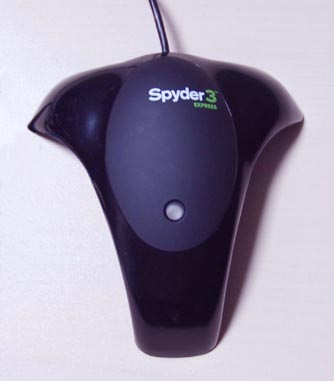

Operation of particular instruments
Please note that instruments are
being driven by ArgyllCMS drivers, and that any problems or
queries regarding instrument
operation should be
directed to the Argyll's author(s) or the Argyll mailing list, and
not to any other party.
The following instruments are directly supported:
(Please note the installation instructions for each
platform - they contain important information for getting your
instruments working.)
JETI:
specbos 1211 & 1201
- Tele-Spectro-Radiometer
spectraval 1511& 1501
- Tele-Spectro-Radiometer
Image Engineering:
EX1
- Tele-Spectro-Radiometer
Klein:
K10-A
- Display Colorimeter. Reported also to work with
the K-1, K-8 and K-10
X-Rite:
DTP20 "Pulse"
- "swipe" type reflective spectrometer, that can be used untethered.
DTP22 Digital Swatchbook
- spot type reflective spectrometer.
DTP41
- spot and strip reading reflective spectrometer.
DTP41T
- spot and strip reading reflective/transmissive spectrometer.
DTP51
- strip reading reflective colorimeter.
DTP92
- CRT display colorimeter.
DTP94 "Optix
XR" or "Optix XR2" or "Optix Pro"- display colorimeter.
ColorMunki
Design or Photo or i1Studio
- spot and "swipe"
reflective/emissive spectrometer (UV cut only).
[ The OEM XEROX PhaserMeter is also reported to work. ]
ColorMunki Create or Smile
- display
colorimeter. (Similar to an Eye-One Display 2)
Lenovo W
- built in laptop
Huey display colorimeter.
Eye-One Display 3
- i1 DisplayPro and ColorMunki Display
[ The OEM
i1Display Pro, NEC SpectraSensor Pro,
Quato Silver Haze 3 OEM, HP DreamColor
& Wacom i1d3 are also reported to work.]
Eye-One Pro2
- spot and
"swipe" reflective/emissive spectrometer.
Gretag-Macbeth (now X-Rite):
Spectrolino
- spot reflective/emissive
spectrometer
SpectroScan
- spot reflective/emissive, XY table
reflective spectrometer
SpectroScanT
- spot reflective/emissive/transmissive, XY
table reflective spectrometer
Eye-One Pro "EFI ES-1000"
- spot and "swipe" reflective/emissive
spectrometer
Eye-One Monitor
- spot and "swipe" emissive spectrometer
Eye-One Display 1 or 2 or
LT - display
colorimeter
HP DreamColor or
APS
- display colorimeter. (Treated as a Eye-One Display 2)
CalMAN X2
- display colorimeter. (Treated as a Eye-One Display 2)
Huey
- display colorimeter
Sequel imaging (Now X-Rite):
MonacoOPTIX
- display colorimeter (Treated
as an Eye-One Display 1)
[The Sequel Chroma 4 & 5, and Sencore ColorPro V, IV & III
also work.]
Lacie Blue
Eye:
- see Eye-One Display
DataColor ColorVision:
Spyder 2
- display colorimeter (Note
that the user must supply firmware)
[The Spyder 1 also seems to work.]
Spyder 3
- display colorimeter.
Spyder 4
- display colorimeter (Note
that the user must supply calibration
data)
Spyder 5
- display colorimeter (Note
that the user must supply calibration
data)
SpyderX
-
display colorimeter
Other:
Colorimètre
HCFR
- display colorimeter
ColorHug &
ColorHug2
- display colorimeter
Palette/SwatchMate Cube
- reflective
colorimeter
Other instruments can be supported indirectly, since patch result
files created by other packages can be imported into Argyll.
General information about:
Strip reading instruments
X-Y Table instruments
Spot reading instruments
There is a list of contributed ccss (Colorimeter Correction
Spectral Sample) files.
There is a list of contributed ccmx (Colorimeter Correction
Matrix) files.
Strip reading instruments
When used with a DT20, DTP41, DTP51, Eye-One Pro or ColorMunki
strip reading instrument, chartread will first establish
communications with the instrument, and then set it up ready to read
the strips. The strips are labeled A to ZZ, and for each strip it
will prompt:
About to read strip XX :
where XX is the strip label, and this is followed by the available
options to navigate, read the strip, or finish. Note that the normal
(forward) direction of strip reading is one that starts at the strip
label.
For the DTP51 you should
feed the strip into the instrument, and the microswitch will trigger
the read.
For the DTP41 you should
line the appropriate strip up in the machine, and press its button.
For the Eye-One Pro you
should set the guide to the appropriate strip, place the instrument
ahead of the first
patch on blank paper, and then press and hold the instruments
button. When you hear a beep from the computer, you can then move
the instrument steadily over the patches, releasing the button after
the instrument is past the last patch. Moving the instrument too
fast or changing speeds may cause a mis-read, or a scan with few
samples read per patch.
For the ColorMunki with the
default chart, the patches are the same width as the silver portion
of body (white version), or the textured portion of the body (black
version). Place aperture of the the instrument (located at its
center) in the white space ahead of the first patch, and then press
and hold the instruments button. When you hear a beep from the
computer, you can then move the instrument steadily over the
patches, releasing the button after the instrument is past the last
patch. Moving the instrument too fast or changing speeds may cause a
mis-read, or a scan with few samples read per patch. For the high density ColorMunki chart (printtarg -h), the patches are
arranged so that three rows are exactly the width of the body
of the instrument. If you are careful you can use this to guide the
center of the instrument over each row, or you may prefer to use
something like a plastic ruler to help guide the instrument.
Using the DTP20 or the Eye-One Pro or ColorMunki with a randomized
chart layout, the strip may be scanned from either direction. If a
randomized chart layout has not been used for the Eye-One Pro or ColorMunki, then the chart
should only be read in the one direction (use chartread -B).
Note that you may have to check that system alert sounds are enabled
and at a suitable volume to in order to hear the beep prompt. For
the Eye-One Pro and ColorMunki, a second beep will sound after a
successfully read strip, or a double beep will sound,
indicating a failure or warning that needs attention. See also the
note on Linux in installation.
If the strip is read successfully there will be a single "success"
beep, and the line will be followed with:
Ready to read strip XX :
Strip read OK
If there is an error of some sort there will be a double "fail"
beep, and a message will be issued, and you will be asked whether to
abort the chart reading, or retry the
failed strip:
Ready to read strip XX :
Strip read failed due to misread (Not enough
patches)
Hit Esc to give up, any other key to retry:
If you are unable to successfully read a strip after several
retries, you can skip that strip using the 'n' key, and save
the chart readings without that strip.
If the strip is read successfully, but the patches values don't seem
to be what is expected, you will get a double "fail" beep and
the following type of warning:
Ready to read strip XX :
(Warning) Seem to have read strip YY
rather than XX !
Hit Return to use it anyway, any other key to
retry, Esc, ^C or Q to give up:
This could be because you have accidentally read the wrong strip (a
common mistake), or it could be that the device response is so
different from what is expected that warning is erroneous, or you
may get a lot of these sorts of warnings if you are accidentally
reading the wrong chart. You may also get this sort of warning if
you are not using bi-direction reading (chartread -B), and read the
strip from the wrong end.
If you are absolutely sure you lined up the correct strip, then hit
return, otherwise line the appropriate strip up again, and hit some
other key (ie. space).
Erroneous warnings are less likely if a previous profile for a
device was given to targen
to set more accurate expectations.
You may also see the following type of warning:
Ready to read strip XX :
(Warning) Patch error YY.YYY (>35 not good,
>95 bad)
There is at least one patch with an very unexpected
response!
Hit Return to use it anyway, any other key to
retry, Esc, ^C or Q to give up:
Similar to the previous warning, this indicates that while the right
strip appears to have been read, one of the patch readings is quite
different to what is expected. This may indicate an error of some
sort (ie. damaged test chart, or bad instrument positioning), or may
be erroneous if the actual device response is quite different to the
expectation. Erroneous warnings are less likely if a previous
profile for a device was given to targen
to set more accurate expectations.
You can also navigate the next strip to be read using the 'f' key to move forward and the
'b' keys
to move backwards. The prompt will indicate whether this strip has
already been read or not, or whether all strips have been read. You
can also use 'n' to move
forward to the next unread strip. After each successful reading it
will move forward to the next unread strip. When you are finished,
use the 'd' to indicate
that you are done. You can choose to finish before all the strips
are read, and the patches that have been read will be saved to the
.ti3 file. This is useful if you are unable to read a particular
strip successfully, or if you are unable to finish the chart in one
session, and you can later resume reading the chart by using the chartread -r flag. [You could
resume reading the chart patch by patch using the chartread -r -p if you are
unable to read a strip successfully.]
When reading in patch by patch mode, there are a few additional
navigation options, such as F to move forward 10
patches, B to move
backwards 10 patches, and g
to go to a specific patch.
You can abort the whole process at any time by hitting Escape, and
the readings will not be saved.
X-Y Table instruments
When you are using an XY table type instrument, such as a Gretag SpectroScan, chartread
will first establish communications with the instrument, and then
set it up ready to read the chart. You will be prompted for each
sheet with a message such as:
Please make sure that the white reference is in
slot 1, then
place sheet 1 of 4 on table, then
hit return to continue, Esc to give up
After hitting return you will be prompted to line up three squares
on the sheet, one at a time:
Using the XY table controls, locate patch A1 with
the sight,
then hit return to continue, Esc to give up
On completing this, the instrument will commence reading each sheet.
Spot reading instruments
When used with a DT22 or SpectroLino or use the patch by
patch reading mode (chartread -p)
with the Eye-One Pro or ColorMunki
instrument, or use the external values mode (chartread -x), chartread will
first establish communications with the instrument, and then set it
up ready to read the patches. The patches are typically labeled by
column A to ZZ, and row 1-999. Each patch will prompt:
Ready to read patch 'XX' :
where XX is the patch label, and this is followed by the available
options to navigate, read the strip, or finish.
Place the instrument on the indicated patch, and trigger a reading
using one of the available methods (typically using the instrument
switch of pressing a key).
There should be an audible prompt on a successful or failed reading.
Note that you may have to check that system alert sounds are enabled
and at a suitable volume to in order to hear the beep prompt. For
the Eye-One Pro and ColorMunki, a second beep will sound after a
successfully read strip, or a double beep will sound,
indicating a failure or warning that needs attention. See also the
note on Linux in installation.
If the patch is read successfully, the line will be completed with:
Ready to read patch XX :
Patch read OK
If there is an error of some sort, a message will be issued, and you
will be asked whether to abort the chart reading, or retry the
failed patch:
Ready to read patch XX : read_strip
returned 'Strip misread' (Bad reading)
Strip read failed due to misread
Hit Esc to give up, any other key to retry:
You can navigate the next patch to be read using the 'f' key to move forward and the
'b' keys
to move backwards, while 'F'
and 'B' will move forward
and backwards by 10 patches. The prompt will indicate whether this
patch has already been read or not, or whether all patches have been
read. You can also use 'n'
to move forward to the next unread patch. When you are finished, use
the 'd' to indicate that
you are done. You can choose to finish before all the patches are
read, and they will be saved to the .ti3 file. This is useful if you
are unable to finish the chart in one session, and you can later resume reading the
chart by using the chartread -r
flag.
You can abort the whole process at any time by hitting Escape, and
the readings will not be saved.
Display Type
Many of the colorimeters have a display
type selection parameter. Depending on the instrument, this
may combine two related functions: 1) Changing the measurement mode
to suite either refresh-type, or non-refresh displays, and 2)
Changing the calibration to suite a particular displays spectral
characteristics.
A refresh type display uses a technology that presents different
portions of the image at different times, doing so at a high enough
rate that this is normally imperceptible. This time varying
characteristic can interfere with measuring a display color unless
the instrument makes allowances for it, typically by making its
measurement period a multiple of the display refresh period. Display
types that refresh are CRT
(Cathode Ray Tube), Single chip DLP (Digital Light Processing) and
Plasma displays. An example of a non-refresh
display technology is LCD (Liquid Crystal Display), although is a
few cases the back-light illumination may have a low enough
frequency flicker to benefit from the refresh mode.
Instruments in which the display type selection only changes the
measurement mode (i.e. i1d3), will typically have some other
independent option to set the calibration type. Simpler instruments
combine the measurement mode with a calibration selections,
typically refresh+CRT and non-refresh+LCD. Some instruments are a
hybrid of both (Spyder4), where the display type can select between
generic refresh/non-refresh that can then use a .CCSS to set the
calibration type, or a combined selection of non-refresh and a
particular display type.
See Comparison_of_display_technology
for some background on different display technologies.
Refresh Rate Measurement
Most of the colorimeters that have a refresh display type
selection, also have an ability to measure the refresh rate of a
display. Some of the spectrometers also have a display refresh
rate measurement capability when in an emissive measurement mode,
even though they don't use this to support a refresh display mode.
You can do a display refresh rate measurement in spotread using the 'F' key.
The particular instruments have a range of accuracy when making
this measurement. A rough guide is as follows:
| Instrument |
Typical error in Hz. |
spectrobos 1211/1201/1501/1511
|
0.05
|
Klein K10-A
|
0.05
|
DTP92
|
0.1
|
i1 Display 2
|
0.5
|
Spyder 2
|
0.7
|
Spyder 3
|
3
|
Spyder 4
|
3
|
i1 Display Pro
|
0.05
|
i1 Pro Spectro.
|
0.05
|
ColorMunki Spectro.
|
0.05
|
specbos 1211 and 1201
Tele-Spectro-Radiometer
Availability:
The specbos 1211 and 1201 from JETI are currently
available instruments. These are reference grade instruments
capable of emissive and ambient measurements, and are often used
for monitor, projector and cinema calibration &
characterization, lighting measurement and colorimeter
calibration, amongst many other uses.
The JETI specbos 1211 and 1201 makes use
of the FTDI FT232R Virtual COM Port Drivers (VCP), that may need
installing for your operating system. See installation instructions.
spectraval 1511 and 1501
Tele-Spectro-Radiometer
Availability:
The spectraval 1511 and 1501 from JETI are currently available
instruments. These are high grade instruments capable of emissive
measurements, and are often used for monitor, projector and cinema
calibration & characterization and colorimeter calibration,
amongst many other uses.
The JETI specbos 1511 and 1501 makes use of
the newer FTDI FT231XS Virtual COM Port Drivers (VCP), that may need
installing for your operating system. See installation
instructions.
Bluetooth: These instruments can be operated via Bluetooth by
first pairing the instrument with your computer and enabling the
Bluetooth serial port, and then allowing the ArgyllCMS tools to
identify the instrument over the serial port.
Image
Engineering EX1
Availability:
The Image
Engineering EX1 is a currently available instruments. This is
a high resolution spectrometer intended for the measurement of light
sources.
Klein K10-A Colorimeter
Availability:
The Klein K10-A from
Klein Instruments
is a currently available instrument. It is noted for it's speed,
high precision, and ability to measure to very low light
levels.This is a high end instruments capable of contact and tele
- emissive, and ambient measurements, and are often used for
monitor, projector and cinema calibration and characterization.
Note that unlike the operation of other instruments, the Ambient
mode is purely manual - the diffuser must be fitted and then the
appropriate calibration setting chosen (Typically with "Lux" in
the name).
By default, more measurements are taken and averaged together
when the light level is low. This can be disabled and a single
measurement taken per reading, to gain maximum speed by using the
-Y A flag.
The K-1, K-8 and K-10 are also
reported to work.
The Klien K10A makes use of the FTDI FT232R Virtual
COM Port Drivers (VCP), that may need installing for your
operating system. See installation
instructions.
ColorMunki Design or Photo,
i1 Studio reflective/emissive
spectrometer
Availability:
The ColorMunki Design or Photo or i1
Studio from X-Rite
is currently available in two different packages from the
manufacturer. These packages differ in what features the
manufacturers software provides, as well as cosmetic differences
between the instrument (white and black). This comparison chart
illustrates the differences (Note that the ColorMunki Design comes
with Pantone libraries). Used with Argyll, there are no
differences in operation of a ColorMunki instrument, irrespective of
which package it came with. The ColorMunki Design has the lowest
RRP, but the Photo package may be cheaper with discounting .
Limitations & Features:
Unlike the Eye-One Pro, the ColorMunki is only available in a U.V.
Cut (ie. "Ultra Violet filtered") model. This means that it is not
suitable for use with the Fluorescent Whitener Additive
Compensation option in Argyll (see here for
a discussion about what FWA compensation is).
Like the Eye-One Pro, this instrument does support the high resolution spectral mode.
There are some OEM versions of this instrument around too, and
the XEROX
PhaserMeter instruments (part of the Xerox PhaserMatch 5.0
package) are also reported to work.
OS X and X-Rite drivers
Please note the installation instructions.
Tips & Tricks:
In handling the instrument when about to make a reading, be
very careful not to accidentally press the switch - it is large and
easily pressed by accident. A guide of some sort (ie. a plastic
ruler) can help a lot in keeping the instrument over a line
of patches.
Patch recognition:
For the best chances of good patch recognition, the instrument
should be drawn smoothly and not too rapidly over the strip. (This
can be a little tricky due to the two small rubber feet on the
bottom of the device that aid its spot reading guide.) If there is a
misread, try slowing down slightly. Generally a higher quality set
of readings will result if slower scans are used, since there will
then be more samples averaged for each patch.
In chartread, the -T ratio argument modifies the
patch consistency tolerance threshold for the ColorMunki. In
recognizing patches in a strip, the instrument takes multiple
readings as the strip is read, and then divide the readings up into
each patch. It then check the consistency of the multiple readings
corresponding to each patch, and reject the measurement if they are
too inconsistent. For some media (ie. a coarser screens, fabric
etc.) the default tolerance may be unreasonably tight, so the -T ratio argument can be used to
modify this criteria. To loosen the tolerance, use a number greater
than 1.0 (ie. 1.5, 2.0).
Note that printtarg provides the -h option that allows the choice of
two different patch row widths with ColorMunki test charts. [Some
people have successfully used the i1Pro patch layout with the
ColorMunki, by making a guide to keep it over the much narrower
patchs.]
Native Calibration Standard:
Reflection measurements are natively X-Rite XRGA.
DTP20
"Pulse" reflective spectrometer
Availability:
The DTP20 from X-Rite was discontinued during
2007, but may still be available from old stock or second hand.
Special features:
The DTP20 has a couple of
unique features that Argyll can take advantage of. One is that it
can operate un-tethered (off line). A whole chart can be read
un-tethered by first clearing any previous readings in the
instrument, then reading the chart TID strip, before reading all the
other strips. The instrument can then be connected up to chartread, which will recognize
the chart, and download all the measurements.
If there is no chart in the instrument when chartread connects to
it, then it will use the strip by strip tethered mode, just like the
other strip instruments. If the right number of spot readings are
present in the instrument, these will be used by chartread too.
Un-tethered spot measurements can also be read in using spotread, which will notice the
stored readings, and offer to print them out, or they can be
ignored, and tethered readings taken. This will clear any saved spot
readings.
Note that tethered (on-line)
strip reading will only work if the firmware in the device is
version 1.03 or greater. You can check the firmware version by
running with the verbose option: -v
Chart printing:
Because the DTP20 measures exact distances using the
markings on its ruler, it's critical that the chart be printed out
exactly the right size. If the chart gets re-sized at all in the
process of printing it, the DTP20 is likely to fail in reading it.
If you have a problem with this, you might want to increase the page
margins using the printtarg -m
parameter, or find a printing path that preserves the test chart
size correctly.
Operation:
When reading in tethered (on-line) mode, that the instrument
takes several seconds to
download the measurements after each strip, and that the indicator
will be in "rainbow" mode while this occurs. Wait until the
indicator turns solid green again before starting to measure the
next strip.
To reset the instrument and
clear any stored readings: press the button three times in quick
succession. The indicator will turn solid blue. Then hold the button
down until the instrument beeps and the indicator goes out. Release
the button and the indicator should flash then return to solid green
(ready).
To calibrate the
instrument, place it on its calibration tile, then press the button
three times in quick succession.The indicator will turn solid blue.
Click the button another three times in quick succession, and the
indicator should turn yellow. Then hold the button down until the
instrument beeps and the indicator goes out. Release the button and
the instrument should flash and then turn solid green.
If the chart is particularly small,
the patches may end up printed very close to the edge of the chart,
and therefore it may be difficult to confine your scan to the chart,
and passing
the instrument over the edge of the chart may prevent it reading
successfully. One way of working around this is to place the chart
on a larger piece of paper of the same type.
The speed of scan can be
quite critical with this instrument. In particular, it doesn't work
very well if the scan is too slow.
You don't want to go too fast either, as this reduces the number of
samples per patch.
Native Calibration Standard:
Reflection measurements are natively historical X-Rite standard
(XRDI).
DTP22
Digital Swatchbook reflective spectrometer
Availability:
The DTP22 from X-Rite is a discontinued
instrument. It may still be available second hand. It is
capable of reading colored patches one at a time.
Native Calibration Standard:
Reflection measurements are natively historical X-Rite standard
(XRDI).
DTP41 reflective, DTP41T
reflective/transmissive spectrometers

Availability:
The DTP41 and DTP41T from X-Rite is a discontinued
instrument. It may still be available second hand.
The series II instruments (DTP41B
and DTP41TB) offer both
serial and USB connection. Note that currently only serial operation
using Argyll is possible with these instruments.
Native Calibration Standard:
Reflection measurements are natively historical X-Rite standard
(XRDI).
DTP51
reflective colorimeter
Availability:
The DTP51 from X-Rite is a discontinued
instrument. It may still be available second hand.
Operation:
The DTP51's switch is triggered by inserting a strip
into the slot.
Native Calibration Standard:
Reflection measurements are natively historical X-Rite standard
(XRDI).
DTP92 CRT display colorimeter
Availability:
The DTP92 from X-Rite is a discontinued
instrument. It may still be available second hand. It will
only read CRT technology displays.
Operation:
The Display Selections for this instrument are:
c
CRT display A Cathode Ray
Tube display, that is of the Refresh type [Default, CB2].
DTP94, "Optix XR" or "Optix XR2" or "Optix Pro" display colorimetrers
Availability:
The DTP94 from X-Rite is a discontinued
instrument, although it is still being supplied to OEMs. It
may still be available as old stock, or second hand. It was sold as
an instrument without software as the DTP94, and packaged with
software from the manufacturer as the "Optix XR" range.
Operation:
The Display Selections for this instrument are:
l
LCD display A Liquid
Crystal Display, that is of the Non-Refresh type [default, CB1].
c
CRT display A Cathode Ray
Tube display, that is of the Refresh type [CB2].
g
Generic
Generic
display [CB3]
Spectrolino reflective/emissive spectrometer
Availability:
The Spectrolino from
Gretag
MacBeth (Now X-Rite) is a discontinued instrument. It is often
available second hand. If buying it second hand, make sure it comes
with all it's accessories, including white reference, spot reading
adapter, display reading adapters, filters (UV, polarizing, D65),
serial cable adapter and power supply.
Native Calibration Standard:
Reflection measurements are natively historical Gretag MacBeth
standard (GMDI).
SpectroScan reflective/emissive and SpectroScanT
reflective/emissive/transmissive spectrometers
Availability:
The SpectroScan and
SpectroScanT from Gretag
MacBeth (Now X-Rite) is a discontinued instrument. It is the
combination of an X-Y table and the Spectrolino instrument. The SpectroScanT is capable of
measuring transparency. It is often available second hand. If buying
it second hand, make sure it comes with all it's accessories,
including white reference, spot reading adapter, display reading
adapters, filters (UV, polarizing, D65) and power supply.
If measuring transparencies using a SpectroScanT, the Enter
key on the instrument may be used to trigger each reading. It will
be recognized after each previous reading has been completed.
Native Calibration Standard:
Reflection measurements are natively historical Gretag MacBeth
standard (GMDI).
Eye-One Pro2:
Availability:
The Eye-One Pro2 (AKA
Eye-One Pro Rev E) from X-Rite is a currently available
instrument. It is available in several packages from the
manufacturer. These packages differ partly in what accessories come
with the instrument, but primarily in what features the
manufacturers software provides. This comparison chart
illustrates the differences. Used with Argyll, there are no
differences in operation of an Eye-One Pro instrument, irrespective
of which package it came with. The lowest cost package is the i1
Basic Pro 2.
There is support for some of the new features of the Eye-One Pro2
(also known as the Eye-One Pro Rev E), in particular the Rev E
measurement mode, spectrometer stray light reduction, wavelength
calibration, and improved black level tracking. Note that there is
no support currently for using the Eye-One Pro2 Ultra Violet
measurement mode, since ArgyllCMS can simulate M0/M1/M2 measurement
modes using both older (Rev A-D) and newer instruments without this.
The new support can be disabled and an Eye-One Pro2 operated in
legacy mode by setting the environment variable
ARGYLL_DISABLE_I1PRO2_DRIVER. See Eye-One
Pro reflective/emissive spectrometer below for details on the operation of this type of
instrument.
OEM models:
The retail Eye-One Pro2 has the part number EO2-XR-ULZW,
but there are a number of OEM Eye-One Pro2's that appear from time
to time with the part number EO2-XR-UF that are missing most
of the features that are new to this model. In particular they are
fitted with an Ultra Violet filter and therefore can only make M2
measurements, they are missing Ambient light measurement
capabilities, they are missing the UV illumination LED (which would
be useless given the UV filter anyway), they are missing the Zebra
stripe ruler sensor needed to make use of the UV LED, and they are
missing the automatic Wavelength Calibration capability. They appear
to be replacement models for the original Eye-One Pro Rev A-D OEM
models. If you are buying an Eye-One Pro2 second hand, be aware of
which model you are getting - you should be paying a lot less for
the EO2-XR-UF compared to the full retail model.
Native Calibration Standard:
Reflection measurements are natively X-Rite XRGA.
Eye-One Pro and
Eye-One Pro2 reflective/emissive spectrometer
Availability:
The Eye-One Pro from
X-Rite (was Gretag MacBeth) is a
discontinued instrument.
The EFI ES-1000 (which is a re-badged Eye-One Pro) is also reported
to work with Argyll, but may be missing certain accessories, and may
not support Ambient mode. It may or may not be a UV cut instrument.
Unless you know what you're doing, and have a very specific reason
to buy an instrument fitted with a UV (Ultra Violet) filter, make
sure that you buy an instrument without the filter. A UV filtered
instrument can't deal intelligently with FWA (Fluorescent Whitener
Additive) effects in paper. (Look here for
more information about FWA compensation.) Using FWA compensation you
can make measurements using ISO 13655:2009 M0, M1 and M2 conditions.
The M2 condition emulates a UV cut instrument.
There have been four revisions of the Eye-One Pro, Rev. A, B, D and
E (AKA Eye-One Pro2 - see above). The rev B, D and E are capable of
sampling twice as fast as the Rev. A version of the instrument, and
are also available with an ambient light reading capability.
NOTE for those running on
older versions of Linux with a Rev. D, there was a problem with the
Linux USB stack that causes the instrument to stop working once it
has been used. The only workaround is to unplug and replug the
instrument in again, whereupon it can be used one time again. A fix
for this problem was in the Linux 2.6.26 kernel release.
See also How can I have confidence in
the i1pro Driver ?
Patch recognition:
For the best chances of good patch recognition, the instrument
should be drawn smoothly and not too rapidly over the strip. If
there is a misread, try slowing down slightly. The Rev A and B.
instruments have a slower sampling rate than the latter revision
instruments, and hence must be used a bit more slowly. Generally a
higher quality set of readings will result if slower scans are used,
since there will then be more samples averaged for each patch.
In chartread, the -T ratio argument modifies the
patch consistency tolerance threshold for the Eye-One Pro. In
recognizing patches in a strip, the instrument takes multiple
readings as the strip is read, and then divide the readings up into
each patch. It then check the consistency of the multiple readings
corresponding to each patch, and reject the measurement if they are
too inconsistent. For some media (ie. a coarser screens, fabric
etc.) the default tolerance may be unreasonably tight, so the -T ratio argument can be used to
modify this criteria. To loosen the tolerance, use a number greater
than 1.0 (ie. 1.5, 2.0).
Native Calibration Standard:
Reflection measurements are natively historical Gretag MacBeth
standard (GMDI) for RevA-D,
and natively X-Rite XRGA for Rev E.
Special features:
A feature unique to Argyll when used with the Eye-One Pro, is the
high resolution spectral mode. This returns spectral measurements at
3.333 nm spacing, rather than the default 10nm spacing, and also
extends the range of wavelengths very slightly. This high resolution
may assist in giving better accuracy for "peaky" emissive sources
such as illuminants and displays. The high resolution mode is
selected by using the -H
flag on the command line to dispcal,
dispread, chartread, and spotread. It can also be toggled
on and off within spotread
using the h key.
Note that while finer spectral resolution will worsen the signal to
noise ratio of the individual spectral values, the signal to noise
ratio of the resulting tri-stimulus color values will be identical
to normal resolution mode, since the same overall integration is
performed.
See Does the i1pro High Resolution mode
improve accuracy ?
Eye-One Monitor
emissive spectrometer

Availability:
The Eye-One Monitor
from X-Rite (was Gretag
MacBeth) is a discontinued instrument. It was a lower cost version
of the Eye-One Pro without
reflective measurement capability. See Eye-One Pro
reflective/emissive spectrometer for details on the operation of this instrument.
Eye-One Display
1, Eye-One Display 2, Eye-One Display LT, ColorMunki Create,
ColorMunki Smile colorimeters,
Instrument Availability:
The ColorMunki Smile
colorimeter is a currently available instrument.
The Eye-One Display LT and
Eye-One Display 2 are
discontinued products, although they may still be available from
some retailers, second hand, and may still be shipped with some
displays as part of their calibration capability.
The ColorMunki Create
colorimeter is a discontinued product, although they may still be
available from some retailers or second hand,can also be used. They
will appear as an i1Display2 colorimeter.
The HP DreamColor
colorimeter can also be used, and will appear as an i1Display2
colorimeter [note that it is calibrated for the DreamColor display].
The HP APS (Advanced
Profiling Solution) colorimeter is also reported to work, and will
appear as an i1Display2.
The CalMAN X2 colorimeter
is also reported to work, and will appear as an i1Display2
colorimeter.
The Lacie Blue Eye colorimeter is also reported to
work, and will appear as an i1Display2 colorimeter.
The Eye-One Display 1 is a
discontinued instrument.
The Eye-One Display LT came with a less expensive package with more
limited software from the manufacture.
The Eye-One Display 2 package came with more software
features, but the instruments are virtually identical, and
will operate identically using Argyll.
The ColorMunki Create
package is another alternative, and will operate identically using
Argyll.
Operation:
The Display Selections for the ColorMunki
Smile are:
f
LCD with CCFL back-light
A Liquid Crystal display that uses a Cold
Cathode Fluorescent back lighting. [Default, CB1]
e
LCD with LED back-light
A Liquid Crystal display that uses
Light Emitting Diode back lighting.
other instruments will offer:
l
LCD display A Liquid
Crystal Display, that is of the Non-Refresh type. [Default, CB1]
c
CRT display A
Cathode Ray Tube display, that is of the Refresh type. [CB2]
i1 DisplayPro and ColorMunki Display colorimeters (i1 Display 3)
Instrument Availability:
Both instruments are currently available.
The ColorMunki Display is a less expensive package
with more limited software from the manufacture, and has hardware
that takes a noticeably longer time to make most measurements (a
minimum of 1 second), but both instruments will take longer for very
dark samples, and under these conditions the speed difference is
less significant. Because of the measurement speed limitation, the
measurement of display refresh rate and synchronization of its
measurements to a refresh display is not possible with the
ColorMunki Display.
The i1Display Pro package
comes with i1Profiler, and the instrument is generally faster than
the ColorMunki Display, but other than this and the software
package, the instruments appear to be virtually identical. (Note
though that the ColorMunki Display is unable to measure the
refresh period, so is less repeatable in this mode than the
i1Display Pro).
Both instruments are capable of using CCSS (Colorimeter Calibration Spectral
Sample) files, and this also gives the instrument the
capability of using a non-default standard observer. CCSS files can
be created using the ccxxmake tool, and
installed or translated from the .EDR files that are provided with
the instrument CD using the oeminst
utility using a spectrometer as a reference.
There are some OEM versions of this instrument around too, and the SpectraCal OEM i1Display, ChromaPure, NEC
SpectraSensor Pro, HP
DreamColor and Wacom
Color Manager instruments are also reported to work. They will
appear as a be a the same as the i1Display Pro. There are
unconfirmed reports that the ASUS branded instrument will also work.
[Note that if you have an
OEM version of this instrument, it's worth checking if they come
with any extra .edr files, that can then be translated for use with
ArgyllCMS using oeminst.]
On MSWindows, if you have installed the Manufacturers applications,
you may have to shut the i1Profiler tray application down before
Argyll can open the instrument.
Operation:
The Display Selections for this instrument are:
n A
non-refresh type display [Default, CB1].
r
A refresh type display - The refresh period
is measured, and the integration time adjusted appropriately. [CB2]
With the manufacturers .edr files & reference Argyll .ccss files
installed, the following selections are:
n A
non-refresh type display [Default, CB1].
r
A refresh type display - The refresh
period is measured, and the integration time adjusted appropriately.
[CB2]
c CRT
(Hitachi CM2112MET, Diamond View 1772ie)
l LCD CCFL
IPS (CCFL AC EIZO HP with CORRECTION)
L LCD CCFL
Wide Gamut IPS (WG CCFL NEC241 271)
b LCD RGB
LED IPS (RGBLED HP SOYO)
e LCD White
LED IPS (WLED AC LG Samsung)
p Projector
(Marantz HP Panasonic Projectors Hybrid EDR)
By default the integration time is adaptive, taking longer when the
light level is low. This can be disabled and a fixed integration
time used to gain maximum speed at the cost of greatly reduced low
light accuracy, by using the -Y A flag.
Note when measuring CRT displays:
The small magnet in the ambient light cover used to signal what
position it is in, can interfere in the operation of the CRT
display, particularly if the ambient cover is in it's natural
position at 180 degrees away from the measuring lens. One way of
minimizing this is to swing the cover down so that it touches the
display adjacent to the lens, thereby moving the magnet away from
the display surface. A more thorough but inconvenient way of
avoiding this problem is to unclip the ambient light cover and slide
it down the cable.
Huey colorimeter
Availability:
The Huey and Huey
Pro are discontinued instruments. They may still be available
as old stock, or second hand.
Operation:
The Display Selections for this instrument are:
l
LCD display A Liquid
Crystal Display, that is of the Non-Refresh type. [Default, CB1]
c
CRT display A Cathode Ray
Tube display, that is of the Refresh type. [CB2]
MonacoOPTIX
colorimeters
Instrument Availability:
Availability:
The MonacoOPTIX from
Monaco Soft is a discontinued instrument. It may still be
available as old stock, or second hand. It was sold packaged with
software from the manufacturer. The Sequel Chroma 4 appears to be a
similar instrument, and both seem to operate as if they were an
Eye-One Display 1 using Argyll.
Operation:
The Display Selections for this instrument are:
c
CRT display A Cathode Ray
Tube display, that is of the Refresh type.
l
LCD display A Liquid
Crystal Display or alternate Calibration, that is of the Non-Refresh
type.
Spyder 2
colorimeter
Availability:
The Spyder 2 has been superseded by the
Spyder 5 and SpyderX, but may be available second hand.
[The Spyder 1 has also been reported as working, but this has not
been confirmed.]
Operation:
Important Note about the
ColorVision Spyder 2 instrument support:
This instrument cannot function without the driver software having
access to the vendor supplied PLD firmware pattern for it.
This firmware is not provided with Argyll, since it is not available
under a compatible license.
The purchaser of a Spyder 2 instrument should have received a copy
of this firmware along with their instrument, and should therefore
be able to enable the Argyll driver for this instrument by using the
oeminst tool.
The Display Selections for this instrument are:
l
LCD display A Liquid Crystal
Display, that is of the Non-Refresh type. [Default, CB1]
c
CRT display A Cathode Ray
Tube display, that is of the Refresh type. [CB2]
Linux USB hub problems:
Note that the Spyder doesn't appear to operate at all well on
Linux if attached to a secondary USB hub. You may have such a
secondary hub built into your motherboard. If Argyll has difficulty
in reliably talking to the Spyder, try connecting it directly to the
computer rather than via a usb hub, or try using a USB port on your
computer that connects directly to a root hub. This is probably due
to a bug in the Linux EHCI driver, and a fix is due to appear in the
Linux kernel sometime after July 2011. The name of the fix is "EHCI:
fix direction handling for interrupt data toggles".
Spyder 3
colorimeter

Availability:
The Spyder3Elite, Spyder3Pro and Spyder3Express have being
superseded by the Spyder 5 and SpyderX, but may still stocked by
some dealers, and may be available second hand. The Spyder3Elite and Spyder3Pro appear to be
identical hardware with different software from the manufacturer.
The Spyder3Express lacks
the ambient sensor.
[Note that this instrument doesn't seem particularly suited to
measuring CRT displays, since it no longer seems to synchronise its
readings to a CRT refresh, and you can no longer remove the LCD
filter, reducing its sensitivity compared to the Spyder 2 in CRT
mode. The Spyder 2 or one of the other instruments may be a better
choice if you particularly need to measure CRTs or Refresh
displays.]
Operation:
The ambient light sensor can be used with the Spyder3Elite and Spyder3Pro instruments, but is
only capable of monochrome readings.
The Display Selections for this instrument are:
n | l A
non-refresh type display [Default, CB1]
r | c
A refresh type display. [CB2]
Spyder 4
colorimeter
Availability:
The Spyder4Elite, Spyder4Pro and Spyder4Express have being
superseded by the Spyder 5 and SpyderX, but may still stocked by
some dealers, and may be available second hand. The Spyder4Elite and Spyder4Pro appear to be
identical hardware with different software from the manufacturer.
The Spyder4Express lacks
the ambient sensor.
Operation:
These instruments are capable of using using CCSS (Colorimeter Calibration Spectral
Sample) files, and this also gives the instrument the
capability of using a non-default standard observer. CCSS files can
be created using the ccxxmake tool
using a spectrometer as a reference.
Important Note about the
DataColor Spyder 4 vendor display type/calibration support:
This instrument does not have a full range of display type
calibration selections available without the vendor supplied
calibration data for it.
This calibration data is not provided with Argyll, since it is not
available under a compatible license.
You can use CCSS files as an alternative (see above), or as the
purchaser of a Spyder 4 instrument you should have received a copy
of the calibration data along with the instrument, and should
therefore be able to enable the full range of display type
selections in Argyll by using the oeminst
tool.
The Display Selections for this instrument are:
n | l
A non-refresh type display with a generic calibration
[Default, CB1].
r | c A
refresh type display with a generic calibration.[CB2]
The Display Selections for this instrument when the manufacturers
calibration information has been installed is:
n
A non-refresh type display with a generic
calibration [Default, CB1].
r
A refresh type display with a generic
calibration.[CB2]
f
LCD, CCFL
Backlight
- normal gamut Liquid Crystal Display with standard Cold Cathode
Fluorescent Lamp backlight.
L
Wide Gamut LCD, CCFL
Backlight - wide gamut Liquid Crystal
Display with Cold Cathode Fluorescent Lamps backlight.
e
LCD, White
LED Backlight
- normal
gamut Liquid Crystal Display with a White LED backlight.
B
Wide Gamut LCD, RGB LED
Backlight - wide gamut Liquid Crystal Display with RGB LED
backlight.
x
LCD, CCFL
Type 2
Backlight
- normal gamut Liquid Crystal Display with alternative Cold Cathode
Fluorescent Lamp backlight (Laptop ?)
The ambient light sensor can be used with the Spyder4Elite and Spyder4Pro instruments, but is
only capable of monochrome readings.
Spyder 5
colorimeter
Availability:
The Spyder5Elite, Spyder5Pro and Spyder5Express are still
available as part of Spyder5 packages. The Spyder5Elite and Spyder5Pro appear to be
identical hardware with different software from the manufacturer.
The Spyder5Express lacks
the ambient sensor.
Operation:
These instruments are capable of using using CCSS (Colorimeter Calibration Spectral
Sample) files, and this also gives the instrument the
capability of using a non-default standard observer. CCSS files can
be created using the ccxxmake tool
using a spectrometer as a reference.
Important Note about the
DataColor Spyder 5 vendor display type/calibration support:
This instrument does not have a full range of display type
calibration selections available without the vendor supplied
calibration data for it.
This calibration data is not provided with Argyll, since it is not
available under a compatible license.
You can use CCSS files as an alternative (see above), or as the
purchaser of a Spyder 5 instrument you should have received a copy
of the calibration data along with the instrument or have been
directed to download it from the manufacturers website, and should
therefore be able to enable the full range of display type
selections in Argyll by using the oeminst
tool.
The Display Selections for this instrument are:
n | l
A non-refresh type display with a generic calibration
[Default, CB1].
r | c A
refresh type display with a generic calibration.[CB2]
The Display Selections for this instrument when the manufacturers
calibration information has been installed is:
n
A non-refresh type display with a generic
calibration [Default, CB1].
r
A refresh type display with a generic
calibration.[CB2]
f
LCD, CCFL
Backlight
- normal gamut Liquid Crystal Display with standard Cold Cathode
Fluorescent Lamp backlight.
L
Wide Gamut LCD, CCFL
Backlight - wide gamut Liquid Crystal
Display with Cold Cathode Fluorescent Lamps backlight.
e
LCD, White
LED Backlight
- normal
gamut Liquid Crystal Display with a White LED backlight.
B
Wide Gamut LCD, RGB LED
Backlight - wide gamut Liquid Crystal Display with RGB LED
backlight.
x
LCD, CCFL
Type 2
Backlight
- normal gamut Liquid Crystal Display with alternative Cold Cathode
Fluorescent Lamp backlight (Laptop ?)
The ambient light sensor can be used with the Spyder5Elite and Spyder5Pro instruments, but is
only capable of monochrome readings.
SpyderX colorimeter
Availability:
The SpyderX Pro and
SpyderX Elite are a
currently available instruments. The SpyderX Pro and SpyderX
Elite appear to be identical hardware with different
software from the manufacturer.
Operation:
This instrument has a black point that varies with
temperature, so it is advisable to first acclimatize it on the
display to be measured for 10-15 minutes before doing a black
calibration and then starting measurements.
The instrument appears to be sensitive to light polarization,
so the angle it is at may affect measurements of LCD based displays.
The Display Selections for this instrument are:
l
General
[Default,CB1]
- i.e. LCD with CCFL backlight
e
Standard
LED
- i.e. LCD with white LED backlight
b
Wide Gamut
LED
- i.e. LCD with RGB LED backlight
i
GB
LED
- i.e. LCD with GB-R Phosphor LED backlight
The ambient light sensor is only capable of monochrome readings, but
seems rather inaccurate due to having a very directional
characteristic since it has no frosting on the collection lens, and
also seems to be quite spectrally inaccurate.
Colorimètre HCFR
colorimeter
Availability:
The Colorimètre
HCFR Probe is a kit instrument from HCFR.
OS X
Please note the installation instructions.
Operation:
The accuracy of this instrument does not seem to be comparable to
the commercial instruments when used for measuring displays,
particularly in the area of measuring dark colors, and I've seen the
best results when used with a CRT display. It may well give good
results in calibrating projectors, since this was what it was
designed to do.
The Display Selections for this instrument are:
l
LCD display A Liquid
Crystal Display [Default].
c
CRT display A Cathode Ray
Tube display.
R Raw
Reading Raw sensor readings,
used for calibration [CB1]
ColorHug
Availability:
The ColorHug
is a low cost display colorimeter instrument from Hughski.
ArgyllCMS will also work with the ColorHug2.
Operation:
Due to the nature of its sensor, the ColorHug accuracy is quite
dependent on the instrument calibration matrix. (The ColorHug2
is much more forgiving though). A custom .CCMX will greatly assist
it's accuracy, although a workaround is to calibrate your display
using its native white point, rather than aiming for some absolute
white point such as D65.
The Display Selections for this instrument are:
l
LCD, CCFL Backlight [Default]
c
CRT display
p
Projector
e
LCD, White LED Backlight
F
Factory matrix (For Calibration) [CB1]
R
Raw Reading (For Factory matrix Calibration) [CB2]
Palette/SwatchMate
Cube
Availability:
The Cube from Palette/SwatchMate
is a currently available entry level Colorimeter, with somewhat
limited accuracy. The ArgyllCMS driver provides two
alternative calibrations that noticably improve
this accuracy.
The Calibration Selections for this instrument are:
m
Matt surfaces [Default]
g
Gloss surfaces
N
Native Calibration
The Cube makes use of the newer FTDI FT231XS Virtual
COM Port Drivers (VCP), that may need installing for your operating
system. See installation instructions.
Operation:
The Cube must be connected via USB for operation with ArgyllCMS, and
can be connected either by USB or using Bluetooth LE when used with
ArgyllPRO ColorMeter on
capable Android devices.
The Cube goes to sleep fairly rapidly and must be woken up by
pressing the top of it before connecting via USB to be recognized by
ArgyllCMS, although once connected, and with an ArgyllCMS utility
running, it should stay awake.
When connecting via Bluetooth to ColorMeter, the foreground
application will be the one that connects to it.
The ability to measure values into its own memory and recover them
later is not supported, since it is not possible to use the
ArgyllCMS calibrations with this feature.
Calibration:
As well as the normal white calibration step, the ArgyllCMS driver
offers two option supplemental calibration steps that can improve
accuracy, but both require appropriate calibration conditions. You
can use spotread with the 'k' command
to trigger this calibration.
The black calibration requires a light trap, and the easiest
way of providing this is to place the Cube in a location that is
dark (i.e. not illuminated directly by any light) and some distance
from any surface. A practical approach I have used is to place the
measuring end in a thick black sock, and hide it from direct
illumination while this calibration step is done.
The gloss calibration requires a black glossy surface. I
have used a paint catalog gloss paint black sample square for this,
but some other completely black glossy surface of sufficient size
such as a glossy black plastic item or a smooth surface painted in
gloss black paint should also work.